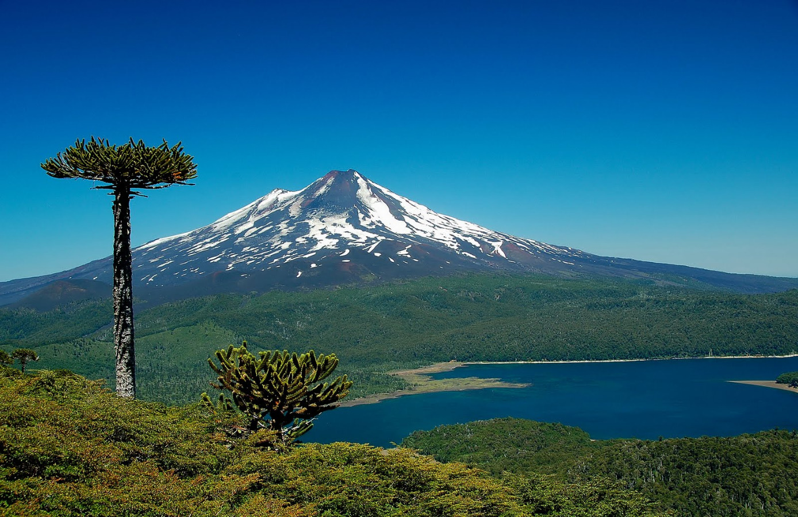
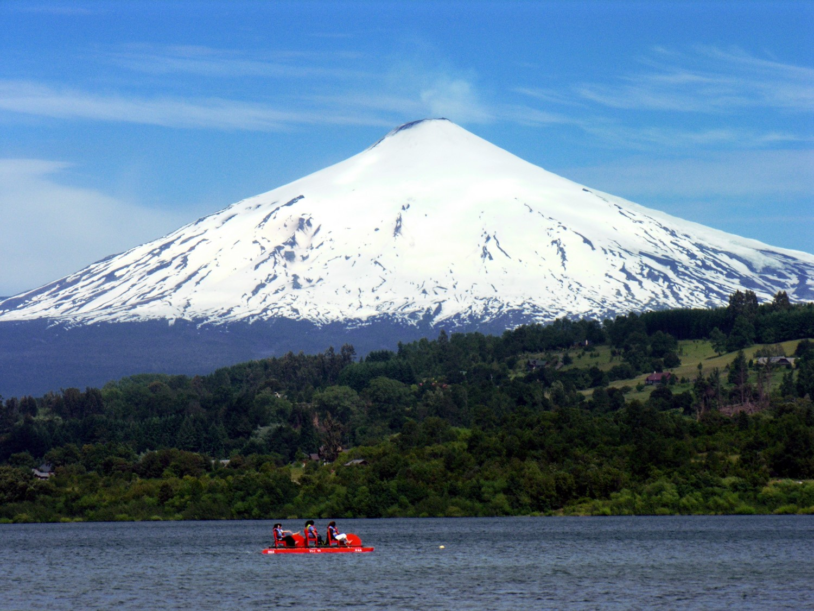
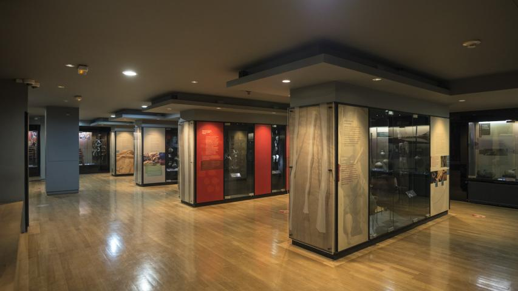
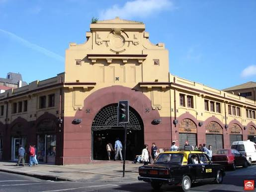
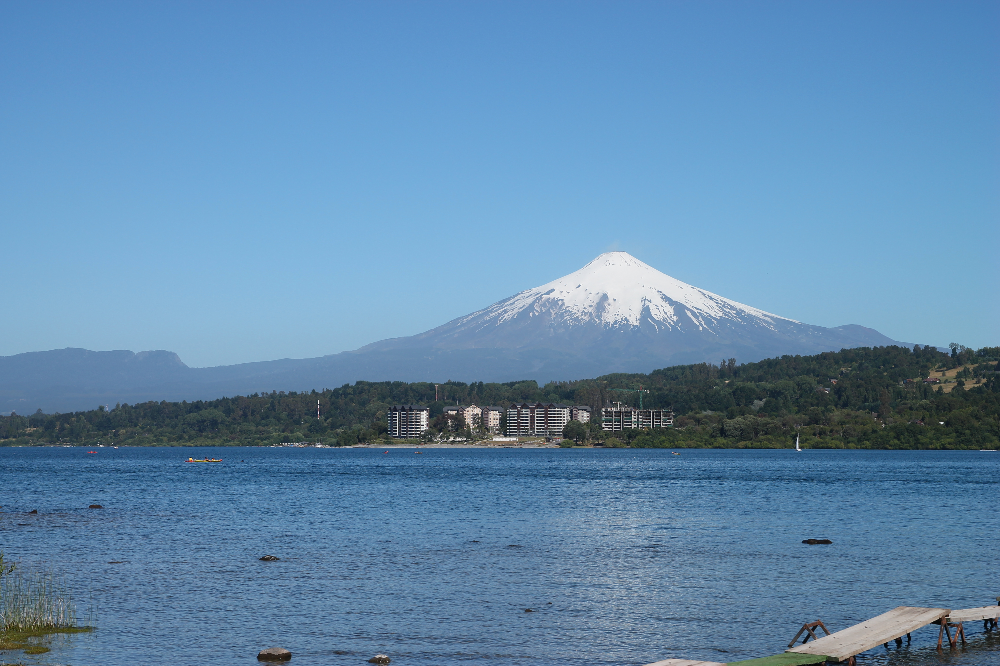
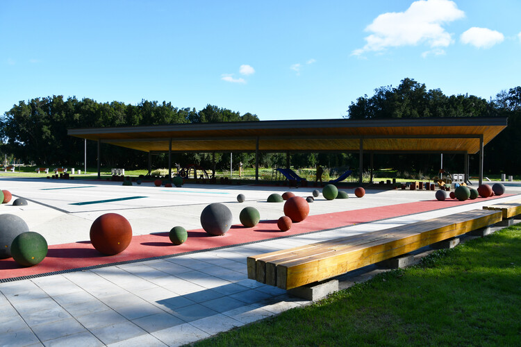
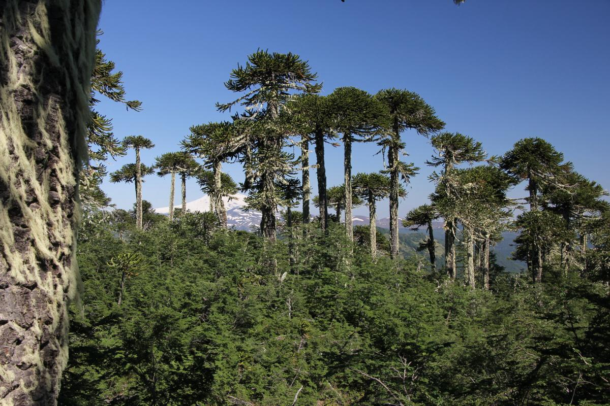
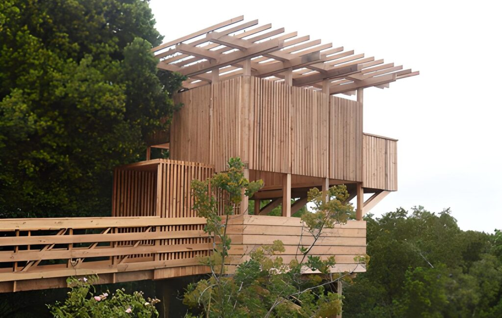

PLANIFICA TU RECORRIDO
Catálogo de rutas
Encuentra tu próximo destino y conoce qué hace especial cada lugar.

Parque Nacional Conguillío
Recorre bosques de araucarias milenarias, lagunas y senderos con vistas al volcán Llaima.
Ver detalle
Volcán Villarrica
Un paisaje volcánico emblemático, con alternativas para admirar la montaña y su entorno.
Ver detalle
Museo Regional de La Araucanía
Conoce la historia y el patrimonio cultural de la región en una visita por Temuco.
Ver detalle
Mercado Municipal de Temuco
Un punto de encuentro para descubrir productos, cocina y vida local.
Ver detalle
Lago Villarrica
Disfruta del paisaje lacustre y de las vistas abiertas hacia el volcán Villarrica.
Ver detalle
Parque Isla Cautín
Un espacio verde junto al río para caminar, descansar y disfrutar al aire libre.
Ver detalle
Bosque Pehuén
Adéntrate en un entorno de bosque nativo y conoce de cerca el paisaje del pehuén.
Ver detalle
Mirador Cerro Ñielol
Camina entre vegetación nativa y contempla Temuco desde uno de sus miradores.
Ver detalleNo encontramos rutas con esa búsqueda. Prueba con otro nombre o lugar.